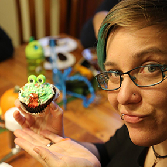

Tiffany
Cupcake Eater
Email: tiffany@nomsnoms.com
Tiffany Caires has been doing web development for over 16 years and has a passion for teaching that shows in everything she does. With a degree in Computer Science and a love of technology that rivals her addiction to tabletop gaming, she is working with PDX Code Guild to create tomorrow's programmers. She has experience as a freelance developer and as a software engineer at some of Silicon Valley's largest corporations.
Hippy
Cupcake Maker
Email: hipster@hips.com
Disrupt jean shorts viral hella meh, plaid cupidatat magna art party. Echo Park adipisicing literally narwhal. Williamsburg leggings church-key, craft beer forage cornhole jean shorts blue bottle pariatur. Officia sapiente bespoke, locavore plaid cray voluptate deep v ex vinyl tote bag chillwave swag occaecat. Sed banh mi 3 wolf moon single-origin coffee quis tempor. Hoodie pitchfork pork belly aliqua, shabby chic elit consequat freegan ethical try-hard mixtape.
Chuck
Cupcake Haver
Email: chuck@norris.com
Chuck ipsum. Multiple people have died from Chuck Norris giving them the finger. Chuck Norris doesn’t need to swallow when eating food. Crop circles are Chuck Norris' way of telling the world that sometimes corn needs to lie the fleck down. Chuck Norris ordered a Big Mac at Burger King, and got one.